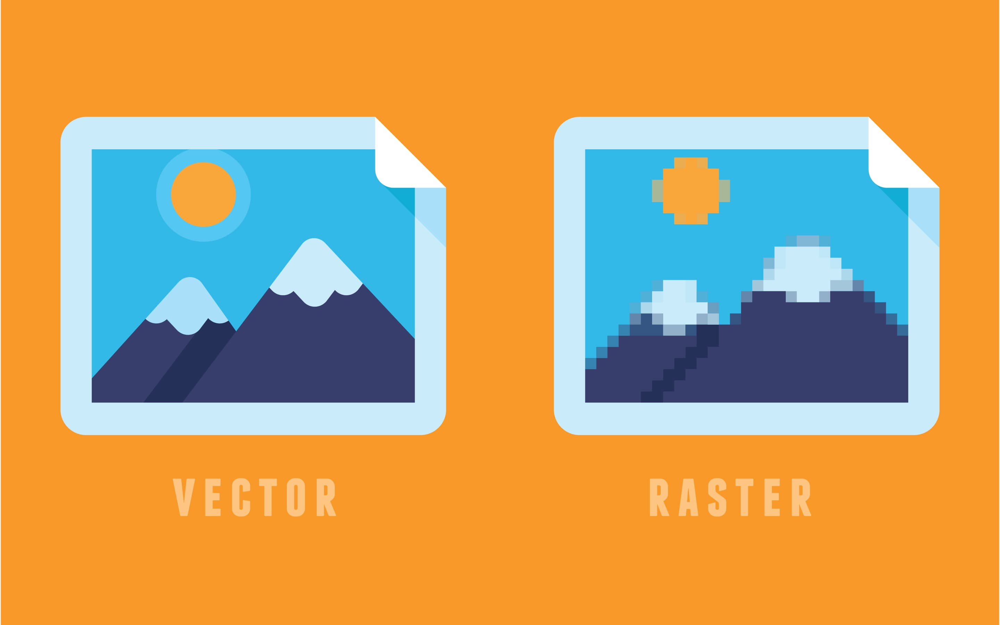

Изображения
Использование графики делает веб-страницы визуально привлекательнее. Изображения помогают лучше передать суть и
содержание документа.
Тег <img>
предназначен для разметки изображений в различных графических форматах.
-
src="путь" - обязательный атрибут, указывает адрес изображения. Путь к картинке может быть абсолютным или относительным.
-
alt="описание" - обязательный атрибут, альтернативное описание.
-
width="значение" и height="значение" - задают размеры изображения в пикселях. Без задания размеров изображение
отображается на странице в оригинальном размере. Если задать только одну величину, браузер автоматически вычислит другую
для сохранения пропорций.
Атрибут alt
Необходим для предоставления значимой информации для пользователей, которые не могут видеть изображение (слабовидящие),
или если изображение не загрузилось. Альтернативный текст должен быть в каждом теге <img>.
-
В описании должно быть законченное, полностью сформированное предложение.
-
Альтернативный текст должен отвечать на вопрос «Что изображено на картинке?».
-
Описание должно быть уникальным и не повторять то, что уже есть в тексте к этому изображению.
-
В описании не нужно использовать слова «изображение», «картинка» или «илюстрация», это само собой понятно.

Если в тексте страницы описывается история этих котят, достаточно будет следующего описания.
В случае когда у нас просто галерея изображений, без какого-то текстового описания, необходимо уточнить что именно
изображено.
Изображение-ссылка
Ссылка не обязательно должна быть с текстовыми контентом. Очень часто, особенно в интернет-магазинах, клик по
изображению товара, в списке товаров, перенаправляет пользователя на страницу этого товара.
Для создания изображения-ссылки оборачиваем тег <img> в ссылку.
Изображение с подписью
Такая задача часто встречается в статьях, где много изображений с пояснением под или над картинкой, например
иллюстрации, графики или диаграммы. Если необходимо разметить изображение с подписью, можно использовать теги <img> и
абзац <p>. Но, именно для таких задач, есть семантические теги
<figure> и <figcaption>.
Внутрь <figure> помещаем разметку изображения и описания. Тег <figcaption> обязательно должен быть первым или последним
ребёнком <figure>.
Абсолютные и относительные пути
Веб-сайты содержат множество файлов, которые размещают в отдельные папки, чтобы ими было легче управлять. Для того,
чтобы создать связь между разными файлами, например в HTML-документе подключить изображение или файл стилей,
используются абсолютные или относительные пути, описывающие расположение подключаемого файла.
Абсолютный путь
Указывает точное местоположение файла в структуре папок на сервере. Абсолютный путь позволяет получить доступ к файлу со
сторонних ресурсов.
Абсолютные адреса состоят минимум из трёх частей: протокол, имя сервера и путь к файлу.
-
https:// - протокол.
-
images.pexels.com - имя сервера.
-
/photos/583842/pexels-photo-583842.jpeg — путь к файлу изображения, где «photos» и «583842» имена папок. Папка «583842»
вложена в «photos».
❗ИНТЕРЕСНО
Например, при клике на
ссылку с таким адресом ,
в браузере откроется вкладка с изображением, которое лежит где-то на
сервере в интернете.
Относительный путь
Описывает путь к ресурсу относительно текущего файла. Используется для составления путей к изображениям, файлам стилей
или создания навигации на другие страницы сайта, который вы создаёте.
Возьмём стандартную структуру файлов и папок проекта.

Для того, чтобы в index.html достучаться до изображения логотипа из папки images,
в атрибуте src нужно указать
относительный путь, то есть относительно HTML-документа.
Символ / обозначает переход на один уровень ниже. Такой путь браузер буквально понимает как:
«В папке images, на одном
уровне с текущим файлом index.html, взять файл logo.png».
В будущем необходимо будет подключать изображения в файле стилей.
Для того, чтобы в файле styles.css достучаться до
изображения логотипа из папки images,
необходимо указать относительный путь (относительно файла-стилей).
Последовательность символов ../ обозначает переход на одну папку (уровень) выше.
Такой путь браузер буквально понимает
как: «Перейти на одну папку выше (назад),
зайти в папку images и взять в ней файл logo.png».
Графические форматы

Векторная графика будет отображаться одинаково хорошо на обычных экранах и на экранах с высокой пиксельной плотностью.
Растровая графика, особенно сжатая с потерей качества, будет выглядеть размыто.
Растровая графика
-
Растровая графика (raster, bitmap)
-
- описание графического файла в виде массива с координатами каждого пикселя и
описанием цвета этого пикселя. Как карта цветов с фиксированным размером.
Самые популярные растровые форматы изображений:
-
JPEG - большие файлы не требующие прозрачного фона или анимации. Этот формат идеален для красочных фотореалистичных
фотографий, так как они могут содержать миллионы цветов.
-
PNG - в отличие от JPEG, имеет дополнительный параметр для описания прозрачности (альфа канал). Подходит для
изображений, фон которых должен быть прозрачный или одноцветный. Используется для иконок и декоративных элементов. Также
используется для изображений повышенной точности - скриншотов, чертежей, графиков и т. п.
-
webP - формат заменяющий PNG и JPEG, но еще с неполной поддержкой в браузерах. При равном качестве изображения, сжатые
файлы будут меньше PNG и JPEG в среднем на 25%.
❗ПОЛЕЗНО
Отличить растровое изображение довольно просто, достаточно увеличить его масштаб. В определённый момент изображение
начнёт размываться, и появятся квадраты (пикселизация).
Векторная графика
-
Векторная графика (SVG, Scalable Vector Graphics)
-
- описывается в виде правил или уравнений, определяющих линии, а также дополнительные свойства, цвет линий и фон для
фигур.
Векторная графика идеально подходит для простых масштабируемых изображений, занимая очень мало места. Тем не менее, с
ростом сложности изображения, размер файла делает использование формата SVG невыгодным. Векторная графика заменяет PNG и
используется для иконок, логотипов, графиков, абстрактной графики и декоративных элементов.
Оптимизация изображений
Изображения составляют около 90% общего веса ресурсов веб-сайта, поэтому их необходимо оптимизировать в первую очередь.
В будущем оптимизацией ресурсов проекта будут заниматься специальные инструменты, которые сделают это автоматически. Но
уже сейчас нужно думать об оптимизации веса страницы и использовать специальные онлайн-сервисы для сжатия изображений.
Нужно помнить, что оптимизация JPEG-файла ведёт к потере качества изображения. Поэтому, при уменьшении веса изображения,
ухудшится его внешний вид. Оптимизация JPEG сводится к поиску баланса между качеством и весом изображения.
❗ВНИМАНИЕ
Оптимизация изображения делается один раз. Экспортированное из макета изображение оптимизируется и только после этого
добавляется в проект.
Прогрессивный JPEG
-
Прогрессивные JPEG-изображения
-
- это файлы изображений в формате JPEG, которые были закодированы таким образом, что при отображении они загружаются
слоями. Прогрессивный JPEG выглядит точно так же, как и обычные JPEG-изображения. Разница в том, как они отображаются во
время загрузки.
Обычные JPEG-файлы загружаются и отрисовываются полосами (построчно), сверху вниз. Для пользователя это создаёт эффект
плохой скорости загрузки страницы. Это особенно заметно для больших изображений или на мобильных устройствах с плохой
скоростью подключения к сети.

Прогрессивный JPEG загружается так, что сразу показывается всё изображение, но в плохом качестве, и в процессе его
загрузки качество постепенно улучшается до максимального.

С точки зрения пользователя, прогрессивный JPEG обеспечивает гораздо более приятный опыт посещения страницы.
Пользователь сразу получает полное представление о содержимом страницы.
Создание
Для того, чтобы сделать прогрессивное JPEG-изображение достаточно воспользоваться специальными инструментами, в том
числе онлайн. Например, при оптимизиации JPEG-изображений в Squoosh, они по умолчанию (автоматически) превращаются в
прогрессивные.
❗ИНТЕРЕСНО
Вес файла прогрессивного JPEG-изображения обычно немного меньше его базового JPEG-аналога.